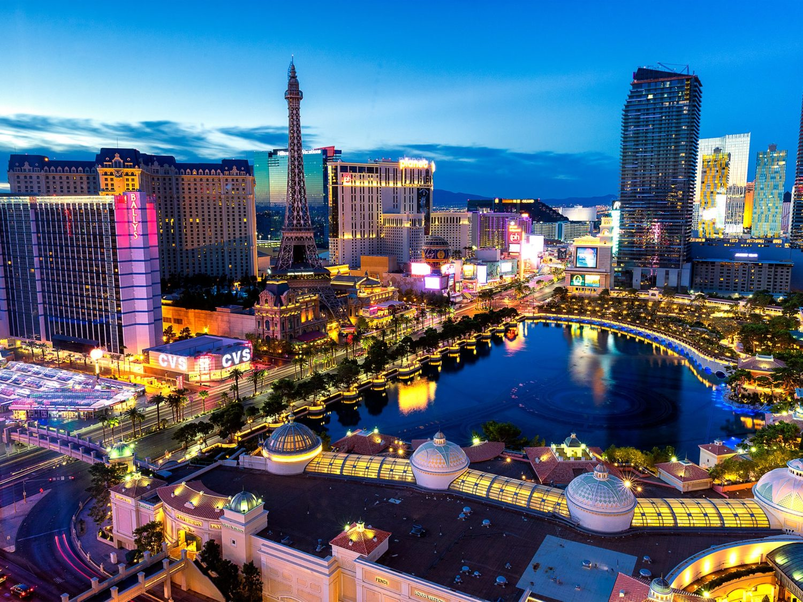

A América do Norte apesar de só ter 3 países atrai muitos turistas, e a maioria que visita esse continente acaba indo pro EUA, pois é o maior país da América do Norte e um dos maiores do mundo com vários pontos turísticos e cidades famosas.
A Estátua da Liberdade, é aquele tipo de programa que você não deve perder. Erguida na Liberty Island, uma ilhota ao sul de Manhattan, foi presente dos franceses aos norte-americanos pelo centenário da independência dos Estados Unidos. Desde sua inauguração em 1886, a Estátua da Liberdade é o mais expressivo símbolo não só nova-iorquino, mas também dos Estados Unidos. Ela foi incluída na lista do Patrimônio da Humanidade da UNESCO em 1984. O custo de sua construção alcançou 800 mil dólares, uma fortuna na época.
Há 3 possibilidades para quem compra ingresso da Estátua da Liberdade: ver o cartão postal de Nova York pelo lado de fora numa visita à ilha onde ele está localizado, entrar no monumento e ir até o pedestal, ou subir até o topo, na sua coroa. Para chegar à ilha, os barcos da Statue Cruises partem do Battery Park, parque no sul de Manhattan, e também há opção de sair de New Jersey, do Liberty State Park. O acesso à coroa da estátua está fechado atualmente.
Outro ponto turístico bem conhecido nos EUA é a cidade de Las Vegas que é conhecida no mundo todo por seus grandiosos cassinos, hotéis luxuosos e pelos enormes e famosos letreiros luminosos. A ‘cidade do pecado’ recebe por ano cerca de 40 milhões de turistas do mundo todo. Mas não são apenas os cassinos que fazem a fama da cidade. Las Vegas tem inúmeras outras atrações que muitos talvez não conheçam. Las Vegas serviu de cenário para diversos filmes. Entre os mais conhecidos estão “Se Beber Não Case”, “007 – Os diamantes são eternos”, “Onze homens e um segredo” e “Miss Simpatia 2”. Os cassinos de Las Vegas possuem réplicas de alguns dos mais conhecidos monumentos do mundo, como a pirâmide de Quéops, a Estátua da Liberdade e a Torre Eiffel. Existe ainda por lá um castelo medieval e uma réplica dos canais de Veneza, com direito a gôndolas e muito mais. Segundo a Nasa, vista do espaço, Las Vegas é a verdadeira cidade da luz. Vale lembrar também que o maior holofote do mundo está em Vegas, no topo da pirâmide do Luxor, e pode ser visto do espaço.
